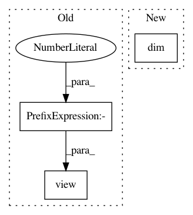

a7a12d157766b69cf4b1ddbb5fcdacfe485dc6fa,gpytorch/kernels/scale_kernel.py,ScaleKernel,forward,#ScaleKernel#Any#Any#Any#Any#,80
Before Change
def forward(self, x1, x2, batch_dims=None, diag=False, **params):
outputscales = self.outputscale
if batch_dims == (0, 2) and outputscales.numel() > 1:
outputscales = outputscales.unsqueeze(1).repeat(1, x1.size(-1)).view(-1)
orig_output = self.base_kernel.forward(x1, x2, diag=diag, batch_dims=batch_dims, **params)
outputscales = outputscales.view(-1, *([1] * (orig_output.dim() - 1)))
After Change
outputscales = outputscales.unsqueeze(0).repeat(x1.size(-1), *([1] * outputscales.dim()))
orig_output = self.base_kernel.forward(x1, x2, diag=diag, batch_dims=batch_dims, **params)
outputscales = outputscales.view(*outputscales.shape, *([1] * (orig_output.dim() - outputscales.dim())))
if diag:
return delazify(orig_output) * outputscales
In pattern: SUPERPATTERN
Frequency: 3
Non-data size: 3
Instances
Project Name: cornellius-gp/gpytorch
Commit Name: a7a12d157766b69cf4b1ddbb5fcdacfe485dc6fa
Time: 2019-04-03
Author: gpleiss@gmail.com
File Name: gpytorch/kernels/scale_kernel.py
Class Name: ScaleKernel
Method Name: forward
Project Name: batra-mlp-lab/visdial-challenge-starter-pytorch
Commit Name: 7db6246fae613a5abf1fbea0b2b987b615ae5a13
Time: 2018-12-26
Author: karandesai281196@gmail.com
File Name: visdialch/encoders/lf.py
Class Name: LateFusionEncoder
Method Name: forward
Project Name: cornellius-gp/gpytorch
Commit Name: 784d00f0c38fb5fd77aed0a6dffb93cc98a0c990
Time: 2019-01-29
Author: gpleiss@gmail.com
File Name: gpytorch/likelihoods/gaussian_likelihood.py
Class Name: GaussianLikelihood
Method Name: pyro_sample_y